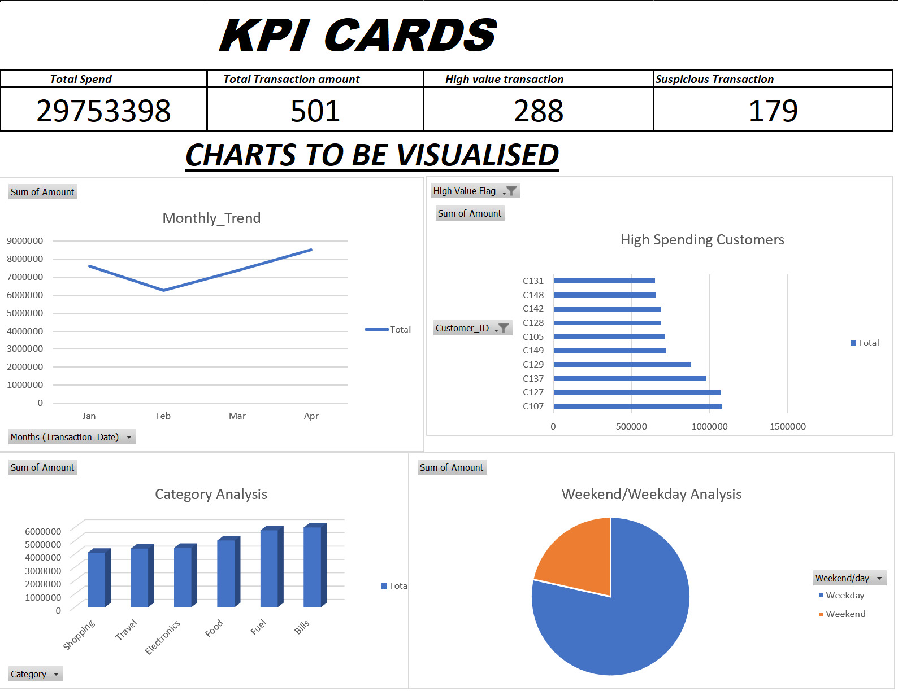
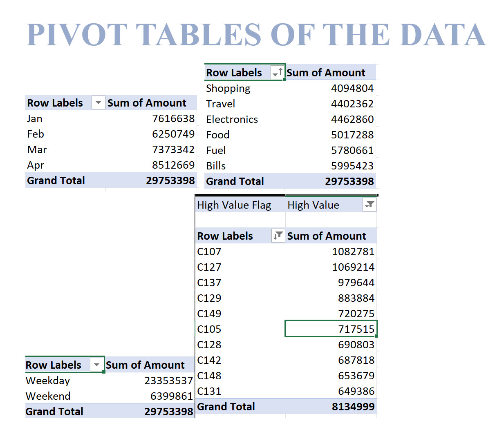
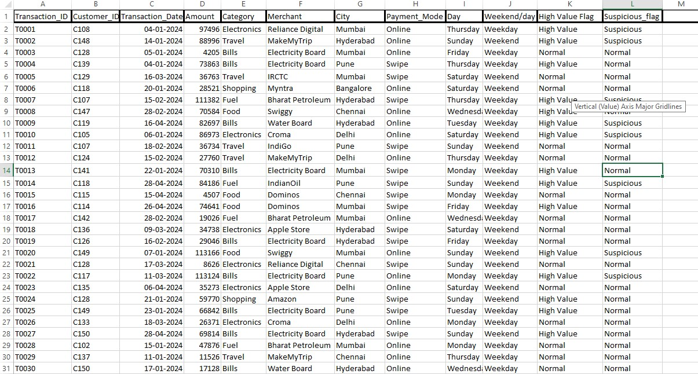

Shahawaj Pasha
Aspiring Data Analyst with a strong interest in transforming raw data into meaningful business insights using analytics and visualization.
Download Resume


Aspiring Data Analyst with a strong interest in transforming raw data into meaningful business insights using analytics and visualization.
Download Resume
I am a passionate and detail-oriented aspiring Data Analyst with a strong foundation in data analysis, visualization, and business intelligence. I enjoy working with raw, unstructured data and transforming it into meaningful insights that support strategic decision-making.
My learning journey has involved hands-on experience with real-world datasets, where I focused on data cleaning, exploratory data analysis, KPI reporting, and dashboard creation using tools like Excel, SQL, and Power BI.
I am driven by curiosity and problem-solving, and my goal is to grow into a data-driven professional who bridges the gap between technical analysis and business impact.
Kristu Jayanti College
Building a strong foundation in data analysis, statistics, and problem-solving through academic coursework and hands-on projects. Gaining practical exposure to data handling, analytical thinking, and real-world business problem analysis while actively complementing academics with certifications and applied learning.
Developed an end-to-end machine learning system to predict telecom customer churn using behavioral and service usage data. Performed exploratory data analysis, feature engineering, and model training using multiple algorithms, with XGBoost selected as the best-performing model. Implemented SHAP explainability to identify key churn drivers and deployed an interactive Streamlit web application for real-time churn prediction.
Developed a data analysis project to study trader behavior by analyzing sentiment and textual signals from trading-related data. Applied natural language processing techniques to identify emotional patterns and market sentiment that influence trading decisions. Performed data preprocessing, sentiment classification, and visualization to uncover insights into how trader emotions correlate with market trends.
Developed a machine learning pipeline to detect fraudulent financial transactions. Performed data cleaning, exploratory data analysis (EDA), feature engineering, and trained classification models to identify suspicious activities in transaction data. Focused on improving fraud detection accuracy while minimizing false positives.
Analyzed banking transaction data using SQL to uncover customer spending behavior, category performance, risk patterns, and revenue trends. Focused on answering business-driven questions such as top customers, high-risk transactions, and weekday vs weekend behavior.
Conducted an exploratory analysis of credit card transaction data to understand customer spending behavior, identify high-value customers, and detect unusual transaction patterns that may indicate potential financial risk. Designed an interactive Excel dashboard using pivot tables and advanced formulas to summarize transaction trends and highlight key financial insights.
The analysis focuses on identifying spending patterns across time, comparing weekday and weekend transactions, and flagging high-value transactions for monitoring and risk assessment.



Gained hands-on experience analyzing datasets, building KPI-driven reports, and translating user behavior data into actionable insights.
View CertificateMicrosoft
Designed end-to-end Power BI dashboards including data modeling, DAX calculations, and business-focused visual storytelling.
View CertificateChegg
Learned to clean, analyze, and visualize data using Excel to support decision-making and stakeholder reporting.
View CertificateQlik
Built KPI-focused dashboards and modeled datasets to deliver accurate and decision-ready insights.
View CertificateQlik
Learned to transform raw data into scalable, high-performance data models for enterprise BI solutions.
View CertificateHP Life | HP Foundation
Built a strong foundation in exploratory data analysis, basic statistics, and data-driven business insights.
View CertificateAWS Academy
Gained a strong foundation in machine learning concepts including data preparation, model training, evaluation, and responsible AI, with exposure to cloud-based machine learning workflows using AWS.
View Certificate